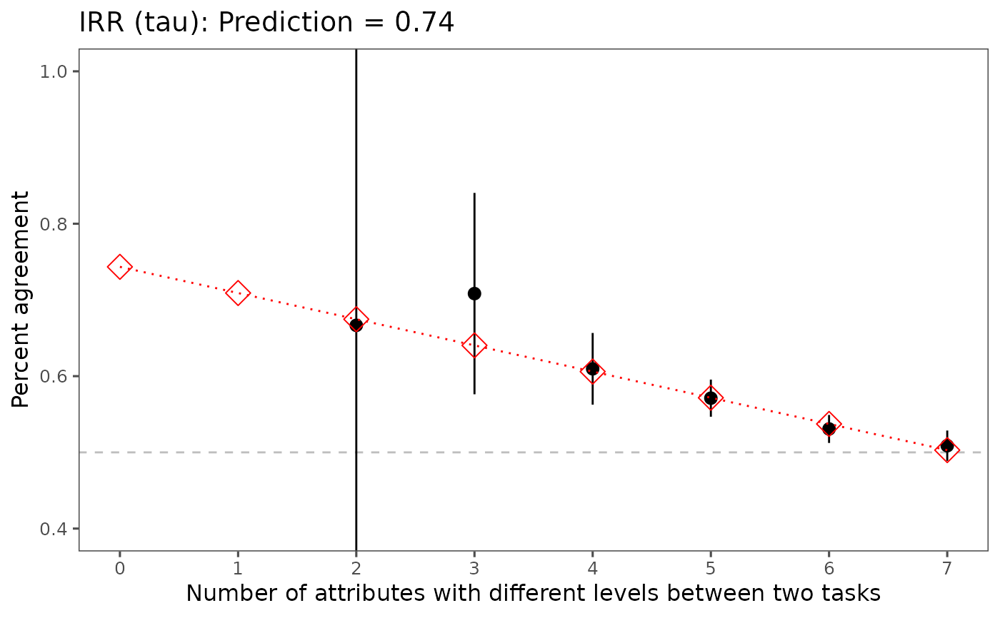

Estimate tau when there is no repeated task.
predict_tau.RdThis function ...
Arguments
- .dataframe
The data frame -- the second element of the list generated by reshape_conjoint()
- .idvar
A character identifying the column name containing respondent IDs
- .title
The title of a figure
Examples
library(projoint)
library(stringr)
data("exampleData1")
head(exampleData1)
#> # A tibble: 6 × 186
#> ResponseId choice1 choice2 choice3 choice4 choice5 choice6 choice7 choice8
#> <chr> <chr> <chr> <chr> <chr> <chr> <chr> <chr> <chr>
#> 1 R_1M3TDihZzq9… Commun… Commun… Commun… Commun… Commun… Commun… Commun… Commun…
#> 2 R_yjYj0jtOY98… Commun… Commun… Commun… Commun… Commun… Commun… Commun… Commun…
#> 3 R_1otDp642wWY… Commun… Commun… Commun… Commun… Commun… Commun… Commun… Commun…
#> 4 R_2zo0OJ1CnBF… Commun… Commun… Commun… Commun… Commun… Commun… Commun… Commun…
#> 5 R_9Zglxj22RFH… Commun… Commun… Commun… Commun… Commun… Commun… Commun… Commun…
#> 6 R_2b2vVVm1bwn… Commun… Commun… Commun… Commun… Commun… Commun… Commun… Commun…
#> # ℹ 177 more variables: choice1_repeated_flipped <chr>, race <chr>,
#> # party_1 <chr>, party_2 <chr>, party_3 <chr>, party_4 <chr>, ideology <chr>,
#> # honesty <chr>, comments <chr>, `K-1-1` <chr>, `K-1-1-1` <chr>,
#> # `K-1-2` <chr>, `K-1-1-2` <chr>, `K-1-3` <chr>, `K-1-1-3` <chr>,
#> # `K-1-4` <chr>, `K-1-1-4` <chr>, `K-1-5` <chr>, `K-1-1-5` <chr>,
#> # `K-1-6` <chr>, `K-1-1-6` <chr>, `K-1-7` <chr>, `K-1-1-7` <chr>,
#> # `K-1-2-1` <chr>, `K-1-2-2` <chr>, `K-1-2-3` <chr>, `K-1-2-4` <chr>, …
outcomes <- str_c("choice", seq(from = 1, to = 8, by = 1))
outcomes <- c(outcomes, "choice1_repeated_flipped")
reshaped_data = reshaped_data <- reshape_conjoint(
.dataframe = exampleData1,
.idvar = "ResponseId",
.outcomes = outcomes,
.outcomes_ids = c("A", "B"),
.alphabet = "K",
.repeated = TRUE,
.flipped = TRUE)
tau <- predict_tau(reshaped_data[[2]])
tau
#> [[1]]
#> x predicted
#> 1 0 0.7351681
#> 2 1 0.7022494
#> 3 2 0.6693307
#> 4 3 0.6364120
#> 5 4 0.6034933
#> 6 5 0.5705745
#> 7 6 0.5376558
#> 8 7 0.5047371
#>
#> [[2]]

#>